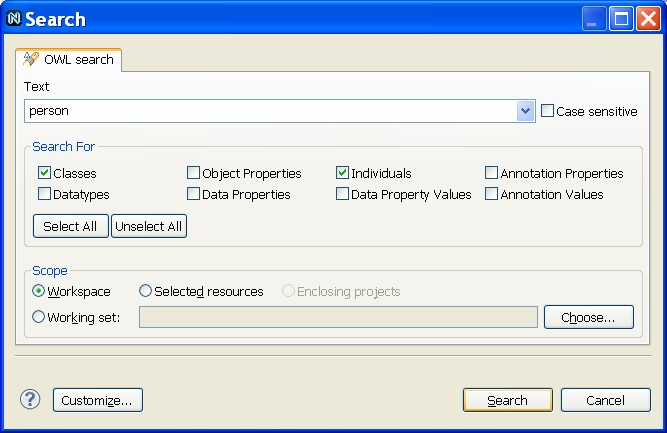
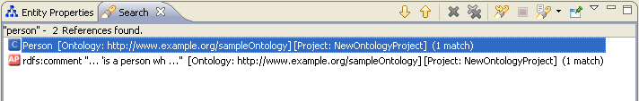

Ontologies can become quite big in size. To facilitate the work with large ontologies, NeOn Toolkit provides a helpful search dialog. The search dialog is very easy to use. Just open the Search dialog by pressing Ctrl+h, then go to the OWL Search tab and type in the keyword you want to search. In addition, you can also select various check boxes to control the scope of elements to be searched.

The result of your search is displayed in a special search panel. A double-click on a result opens the entry. For example, if you double-click on a search result of an annotation, the Entity Properties panel for the annotation will be displayed automatically.
To use the search, proceed as follows:
